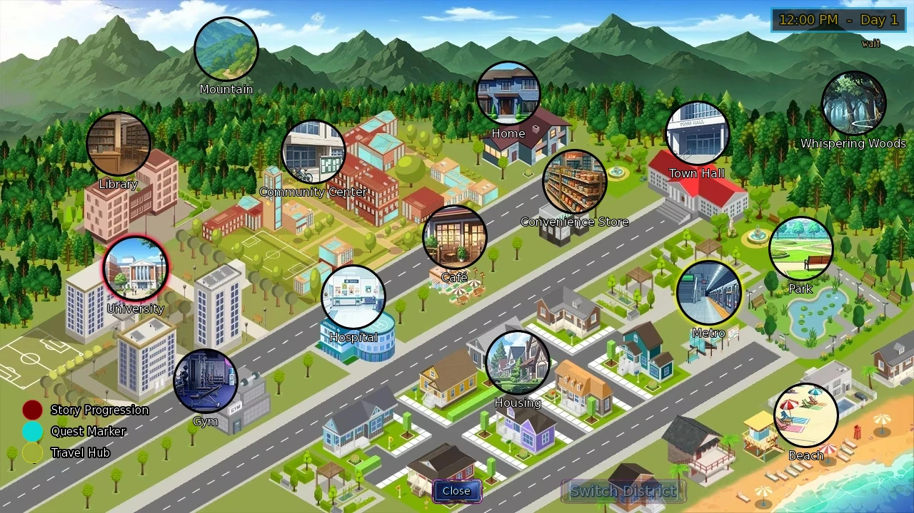
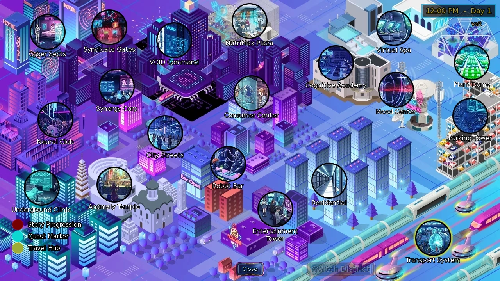
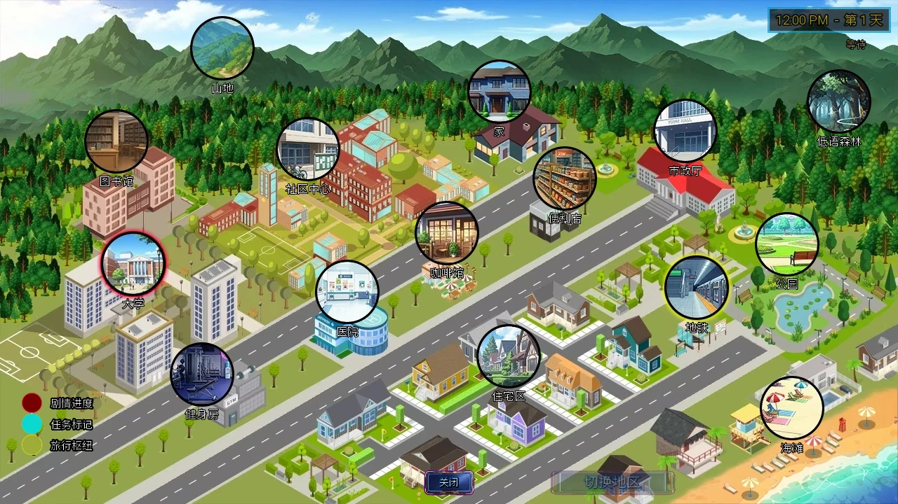

Select a screenshot to enlarge it. Screens show example inventories and progress.
Check the menu’s current Objectives first, then choose the era and district. A map building can contain several indoor rooms. Some entrances come from indoor actions, invitations, construction or event Objectives. Expand the indexes when you are ready to see later location names.
- Open the current era’s district map and check the destination and opening hours.
- Inside a building, inspect its travel and return actions.
- If a destination is missing, check Objectives, hours and the room containing its entrance.
Maps, the clock and era travel
| Era | Usual anchor | Districts |
|---|---|---|
| Present | Your Bedroom (appearance follows starting proficiency) | Uptown / Downtown |
| Medieval | Ancient Earth Shrine (Altar Chamber) | Village Outskirts / Kings Demesne |
| Future | Nova's Quantum Research Lab | Fringe Zone / Prime Sector |
- Era jumps normally have a 60-minute base cost; related upgrades change the current duration. Follow the entry and current upgrades.
- Ordinary map movement within one district normally does not advance the clock. District changes and indoor actions use their own times. Present-era transit has its own tickets and pass upgrades.
- Both Future transport hubs sell Hyperloop Coordinates:300 credits and 10 minutes, once. They unlock the map’s district switch and make transit follow the selected destination.
- Closing times are exclusive: a 09:00–17:00 location closes at 17:00. Teacher schedules and lesson hours are additional conditions; scheduled events follow their own notice.
- A dash means no fixed location opening hours, rather than guaranteeing every character or action is available all day.
Useful routes to remember
| Task | Route |
|---|---|
| Recovery and everyday learning | Your Bedroom (appearance follows starting proficiency)；City Gym (Uptown)；City Library (Uptown)；University Campus |
| Mining | Mountain Foothills → Mining guide |
| Dungeon exploration | Dungeon entrances, preparation and return；Infinity Dungeon |
| Guilds | Fighters Guild；Bards Guild；Back Alleys → Thieves Guild |
| TD base | Resistance Hideout → Operations Center → Tower Defense |
| Shop expansion | Corner Convenience Store → expanded shop and storage room after its commission |
Present — Uptown
Show district destinations and indoor approaches
| Destination | Usual approach (current unlock conditions still apply) | Fixed opening hours |
|---|---|---|
| Attic | Living Room · 0 min | — |
| Basement | Living Room · 0 min | — |
| Basketball Court | Community Center Hallway · 0 min | — |
| Your Bedroom (appearance follows starting proficiency) | Starting room; home entrance | — |
| Boardwalk | City Beach (Uptown) · 0 min | — |
| Bulk Goods Store Storage Room | Corner Convenience Store / Bulk Goods Store after expansion · 0 min；After the shop expansion commission | — |
| Butterfly Pavilion | University Hall · 0 min | — |
| City Beach (Uptown) | District map, once unlocked | — |
| City Gym (Uptown) | District map, once unlocked | 06:00–21:00 |
| City Hospital (Uptown) | District map, once unlocked | — |
| City Library (Uptown) | District map, once unlocked | 08:00–22:00 |
| Community Auditorium | Community Center Hallway · 0 min | — |
| Community Center | District map, once unlocked | — |
| Community Center Hallway | Community Center · 0 min | — |
| Corner Convenience Store / Bulk Goods Store after expansion | District map, once unlocked | 07:00–23:00 |
| Dr. Akira's Office | City Hospital (Uptown) · 0 min | — |
| Farmers Market | Mountain Foothills (Uptown) · 0 min | — |
| Hidden Waterfall | Mountain Foothills (Uptown) · 0 min | — |
| Jessie's Room | Basement · 0 min | — |
| Katie's Home | District map, once unlocked | — |
| Kitchen | Your Bedroom (appearance follows starting proficiency) · 0 min | — |
| Living Room | Your Bedroom (appearance follows starting proficiency) · 0 min | — |
| Local Café | District map, once unlocked | 06:00–17:00 |
| Local Café (Interior) | Local Café · 0 min | 06:00–17:00 |
| Metro Station (Uptown) | District map, once unlocked | — |
| Mountain Foothills (Uptown) | District map, once unlocked | — |
| Patron Statue | Uptown Park · 0 min | — |
| Residential Block | District map, once unlocked | — |
| Sanctum | Your Bedroom (appearance follows starting proficiency) · 0 min; full-version entry | — |
| Town Hall (Uptown) | District map, once unlocked | 09:00–17:00 |
| Town Hall Office | Town Hall (Uptown) · 0 min | — |
| University Campus | District map, once unlocked | 09:00–17:00 |
| University Classroom | University Hall · 0 min | — |
| University Computer Lab | University Hall · 0 min | — |
| University Hall | University Campus · 0 min | — |
| University Pool | University Hall · 0 min | — |
| University Research Lab | University Hall · 0 min | — |
| Uptown Park | District map, once unlocked | — |
| Whispering Woods (Uptown) | District map, once unlocked | — |

Present — Downtown
Show district destinations and indoor approaches
| Destination | Usual approach (current unlock conditions still apply) | Fixed opening hours |
|---|---|---|
| Apartment Complex | District map, once unlocked | — |
| Back Alley | District map, once unlocked | — |
| Basement | Mansion Foyer (Downtown) · 0 min | — |
| Boardroom | Office Building · 0 min | 09:00–17:00 |
| City Street (Downtown) | District map, once unlocked | — |
| Clothing Store (Mall) | Shopping Mall (Interior) · 0 min | 09:00–19:00 |
| Cotton's Room | Music Studio · 0 min | — |
| Dance & Yoga Studio | District map, once unlocked | 12:00–23:00 |
| Dining Room | Mansion Foyer (Downtown) · 0 min | — |
| Dojo | City Street (Downtown) · 0 min | 10:00–22:00 |
| Downtown Bar | District map, once unlocked | 00:00–03:00 / 20:00–24:00 |
| Downtown Park | District map, once unlocked | — |
| Downtown Restaurant | District map, once unlocked | 10:00–22:00 |
| Food Court (Mall) | Shopping Mall (Interior) · 0 min | 09:00–19:00 |
| Investment Planning | Office Building · 0 min | 09:00–17:00 |
| KTV | District map, once unlocked | 20:00–24:00 / 00:00–02:00 |
| KTV Private Room | KTV · 0 min | 20:00–24:00 / 00:00–02:00 |
| Lounge | Mansion Foyer (Downtown) · 0 min | — |
| Mansion Exterior (Downtown) | District map, once unlocked | 18:00–22:00 |
| Mansion Foyer (Downtown) | District map, once unlocked | 18:00–22:00 |
| Master Bedroom | Mansion Foyer (Downtown) · 0 min | — |
| Metro Station (Downtown) | District map, once unlocked | — |
| Miki's Bedroom | Mansion Foyer (Downtown) · 0 min | — |
| Music Studio | District map, once unlocked | 11:00–23:00 |
| Mystic Curiosities Shop | District map, once unlocked | 09:00–23:00 |
| Night Club | District map, once unlocked | 00:00–03:00 / 21:00–24:00 |
| Nyx's Room | Music Studio · 0 min | — |
| Office Building | District map, once unlocked | 09:00–17:00 |
| Offices | Office Building · 0 min | 09:00–17:00 |
| Police Station | City Street (Downtown) · 0 min | — |
| Retro Arcade | District map, once unlocked | 12:00–22:00 |
| Romantic Retreat Hotel | District map, once unlocked | — |
| Sabrina's Couch | Mystic Curiosities Shop · 0 min；Sabrina’s personal route; from 21:00 | — |
| Sabrina's Workshop | Mystic Curiosities Shop · 0 min；Sabrina’s workshop invitation | — |
| Shopping Mall | District map, once unlocked | 09:00–19:00 |
| Shopping Mall (Interior) | Shopping Mall · 0 min | 09:00–19:00 |
| Spa | District map, once unlocked | — |
| Sports Car Dealer | City Street (Downtown) · 0 min | 09:00–18:00 |
| Study | Mansion Foyer (Downtown) · 0 min | — |
| Talena's Room | Music Studio · 0 min | — |
| Vacant Building (appearance changes with progress) | District map, once unlocked | — |
Medieval — Village Outskirts
Show district destinations and indoor approaches
| Destination | Usual approach (current unlock conditions still apply) | Fixed opening hours |
|---|---|---|
| Ancient Earth Shrine | District map, once unlocked | — |
| Ancient Earth Shrine (Altar Chamber) | Nova's Quantum Research Lab · 0 min | — |
| Bandit Hideout | District map, once unlocked | — |
| Caravan Rest Stop | District map, once unlocked | — |
| Fishing Hut | Fishing Village (Coast) · 0 min | — |
| Fishing Village (Coast) | District map, once unlocked | — |
| Forest Clearing | Royal Hunting Grounds (Edge) · 0 min | — |
| Forest Hut | Secluded Trail · 0 min | — |
| Illuminated Manuscript Room | Monastery Scriptoria (Lobby) · 0 min | — |
| Inn Bedroom | Traveler's Inn Tavern · 480 min | — |
| Knight's Training Grounds | District map, once unlocked | — |
| Monastery Scriptoria | District map, once unlocked | — |
| Monastery Scriptoria (Lobby) | Monastery Scriptoria · 0 min | — |
| Monk's Temple Training Hall | Monastery Scriptoria (Lobby) · 0 min | — |
| Mountain Foothills | District map, once unlocked | — |
| Mystic's Meditation Grove | District map, once unlocked | — |
| Peasant Huts | District map, once unlocked | — |
| Robin's Hunting Lodge | Royal Hunting Grounds (Edge) · 0 min | — |
| Royal Hunting Grounds (Edge) | District map, once unlocked | — |
| Secluded Trail | Royal Hunting Grounds (Edge) · 0 min | — |
| Sorceress Home | Ancient Earth Shrine · 0 min | — |
| Sylwithe's Hollow | The Darkened Path · 5 min | — |
| The Darkened Path | Whispering Woods · 5 min | — |
| Traveler's Inn Tavern | District map, once unlocked | — |
| Underground Catacombs | Monastery Scriptoria (Lobby) · 0 min | — |
| Village Healer's Hut | District map, once unlocked | 06:00–21:00 |
| Village Market | District map, once unlocked | 06:00–21:00 |
| Void Chamber | Underground Catacombs · 0 min | — |
| Whispering Woods | District map, once unlocked | — |
| Witch's Hut | Whispering Woods · 0 min | — |
| Wizard's Interior | Wizard's Tower · 0 min | — |
| Wizard's Tower | District map, once unlocked | — |
Medieval — Kings Demesne
Show district destinations and indoor approaches
| Destination | Usual approach (current unlock conditions still apply) | Fixed opening hours |
|---|---|---|
| Acrobat Training Hall | District map, once unlocked | 06:00–21:00 |
| Arcane Shop | District map, once unlocked | 10:00–18:00 |
| Archery Range | District map, once unlocked | 09:00–18:00 |
| Back Alleys | District map, once unlocked | — |
| Back Street | Backstage · 0 min | — |
| Backstage | Performance Stage · 0 min | 06:00–21:00 |
| Bards Guild | District map, once unlocked | 13:00–24:00 |
| Barn Interior | Rural Farm · 0 min | — |
| Behind the Crates | Dead End · 0 min | — |
| Black Market | Thieves Guild · 0 min | 20:00–24:00 / 00:00–05:00 |
| Blacksmith Shop | Merchants Quarter · 0 min | 06:00–21:00 |
| Caravan Crossroads | District map, once unlocked | — |
| Castle Courtyard | Throne Room · 0 min | — |
| Castle Garden | Throne Room · 0 min | — |
| Central Plaza | Grand Bazaar · 0 min | 06:00–21:00 |
| Cobbler Shop | Merchants Quarter · 0 min | 06:00–21:00 |
| Crafts and Jewelry Stall | Central Plaza · 0 min | 06:00–21:00 |
| Dead End | Back Street · 0 min | — |
| Exotic Goods Merchant | Central Plaza · 0 min | 06:00–21:00 |
| Fighters Guild | District map, once unlocked | 10:00–20:00 |
| Food Vendors | Central Plaza · 0 min | 06:00–21:00 |
| General Goods Store | Merchants Quarter · 0 min | 06:00–21:00 |
| Gilded Row | District map, once unlocked | — |
| Grand Ballroom | District map, once unlocked | 11:00–20:00 |
| Grand Bazaar | District map, once unlocked | 06:00–21:00 |
| Hidden Chamber | Thieves Guild · 0 min | — |
| Hot Springs | District map, once unlocked | — |
| Hovel District | District map, once unlocked | — |
| Lillian's Lair | Back Alleys · 0 min | — |
| Merchants Quarter | District map, once unlocked | 06:00–21:00 |
| Noble Quarter | District map, once unlocked | — |
| Performance Stage | Central Plaza · 0 min | 06:00–21:00 |
| Princess Bedroom | Throne Room · 0 min | — |
| Rose & Thorn | District map, once unlocked | — |
| Rowdy Alehouse | District map, once unlocked | 20:00–24:00 / 00:00–03:00 |
| Royal Bedroom | Throne Room · 0 min | — |
| Royal Castle | District map, once unlocked | — |
| Rural Farm | District map, once unlocked | — |
| Secluded Sanctuary | District map, once unlocked | — |
| Tailor Shop | Merchants Quarter · 0 min | 06:00–21:00 |
| Thieves Guild | Back Alleys · 0 min | 20:00–24:00 / 00:00–05:00 |
| Throne Room | Royal Castle · 0 min | — |
| Tournament Grounds | District map, once unlocked | 06:00–21:00 |
Future — Fringe Zone
Show district destinations and indoor approaches
| Destination | Usual approach (current unlock conditions still apply) | Fixed opening hours |
|---|---|---|
| Aquatic Modification Testing Zone | District map, once unlocked | — |
| Archive Facility | District map, once unlocked | — |
| Artificial Nature Preserve | District map, once unlocked | — |
| Bio-Optimization Medical Center | District map, once unlocked | — |
| Bureaucracy Automation Center | District map, once unlocked | — |
| Glitch's Den | Unregistered Housing Complex · 0 min | — |
| Human Interaction Optimization Center | District map, once unlocked | — |
| Human Performance Optimization Lab | District map, once unlocked | — |
| Hyperloop Transit Nexus | District map, once unlocked | — |
| Industrial Waste Processing Zone | District map, once unlocked | — |
| Nova's Quantum Research Lab | District map, once unlocked | — |
| Resistance Hideout | District map, once unlocked | — |
| Seraph's Sanctuary | Sky-Level Atmospheric Management Station · 0 min | — |
| Sky-Level Atmospheric Management Station | District map, once unlocked | — |
| Surplus Distribution Center | District map, once unlocked | — |
| Universal Knowledge Synthesis Institute | District map, once unlocked | — |
| Unregistered Housing Complex | District map, once unlocked | — |
Future — Prime Sector
Show district destinations and indoor approaches
| Destination | Usual approach (current unlock conditions still apply) | Fixed opening hours |
|---|---|---|
| Anomaly Temple | District map, once unlocked | — |
| Cognitive Optimization Academy | District map, once unlocked | — |
| Councilor's Private Office | Synergy Corp Corporate Tower · 0 min；Saber’s invitation | — |
| Enforcement Operations Center | Synergy Corp Corporate Tower · 0 min；Saber’s invitation | — |
| Entertainment Tower | District map, once unlocked | — |
| Genetically Enhanced Plant Research Dome | District map, once unlocked | — |
| Mood Center | District map, once unlocked | — |
| Multi-Level Automated Parking Complex | District map, once unlocked | — |
| Neural Club | District map, once unlocked | — |
| NutriMax Optimization Plaza | District map, once unlocked | — |
| Optimal Living Tower Alpha | District map, once unlocked | — |
| Optimized Urban Thoroughfare Alpha-7 | District map, once unlocked | — |
| Prime Transportation Nexus Hub | District map, once unlocked | — |
| Robot Bar | District map, once unlocked | — |
| Synergy Corp Corporate Tower | District map, once unlocked | — |
| Synthetic Companion Matching Facility | District map, once unlocked | — |
| Underground Modification Clinic | District map, once unlocked | — |
| Virtual Spa | District map, once unlocked | — |
| VOID Central Command Headquarters | District map, once unlocked | — |
| VOID Consumer Fulfillment Center | District map, once unlocked | — |
| VOID Master Control | VOID Central Command Headquarters · 0 min | — |

Rose & Thorn interiors
Construction, staffing and personal routes open rooms and actions. Cell 1 has a reserved purpose; current new cell construction covers cells 2–7. Relevant recruitment needs a built vacant cell. The building’s own dungeon is separate from adventure dungeons.
Show room names and approaches (includes later names)
| Destination | Usual approach (current unlock conditions still apply) | Fixed opening hours |
|---|---|---|
| Arcane Room | West Hallway · 0 min | — |
| Brothel Dungeon | Rose & Thorn · 0 min | — |
| Calibration Room | Upper Floor · 0 min | — |
| Cell 1 | Cell Corridor · 0 min; cell must be built | — |
| Cell 2 | Cell Corridor · 0 min; cell must be built | — |
| Cell 3 | Cell Corridor · 0 min; cell must be built | — |
| Cell 4 | Cell Corridor · 0 min; cell must be built | — |
| Cell 5 | Cell Corridor · 0 min; cell must be built | — |
| Cell 6 | Cell Corridor · 0 min; cell must be built | — |
| Cell 7 | Cell Corridor · 0 min; cell must be built | — |
| Cell Corridor | Brothel Dungeon · 0 min | — |
| Cellar | Nurse's Room · 0 min | — |
| Cinnamon's Room | Menagerie · 0 min | — |
| Courtyard | West Hallway · 0 min | — |
| Elara's Office | Rose & Thorn · 0 min | — |
| Ember's Lair | Menagerie · 0 min | — |
| Foxy's Room | Menagerie · 0 min | — |
| Garden | West Hallway · 0 min | — |
| Gem's Delve | Cell Corridor · 0 min | — |
| Kitchen | West Hallway · 0 min | — |
| Maids Quarters | Rose & Thorn · 0 min | — |
| Massage Room | Upper Floor · 0 min | — |
| Master Bedroom | Rose & Thorn · 0 min | — |
| Menagerie | Courtyard · 0 min | — |
| Mittens' Room | West Hallway · 0 min | — |
| Nurse's Room | Rose & Thorn · 0 min | — |
| Pixie's Room | Master Bedroom · 0 min | — |
| Pool | Courtyard · 0 min | — |
| Ryia's Room | Worker Quarters · 0 min | — |
| Secret Room | West Hallway · 0 min | — |
| Security Office | Rose & Thorn · 0 min | — |
| The Bar | Rose & Thorn · 0 min | — |
| Training Room | West Hallway · 0 min | — |
| Upper Floor | Rose & Thorn · 0 min | — |
| Vespa's Room | Upper Floor · 0 min | — |
| VIP Lounge | Upper Floor · 0 min | — |
| West Hallway | Rose & Thorn · 0 min | — |
| Whiskers' Room | Menagerie · 0 min | — |
| Worker Quarters | Rose & Thorn · 0 min | — |
Vampire areas
Show room names and approaches (includes later names)
| Destination | Usual approach (current unlock conditions still apply) | Fixed opening hours |
|---|---|---|
| Carmilla's Chamber | Vampire Lair · 0 min | — |
| Dark Corridor | Library Basement · 0 min | — |
| Library Basement | City Library (Uptown) · 0 min | — |
| Master's Chamber | Vampire Lair · 0 min | — |
| Torea's Chamber | Vampire Lair · 0 min | — |
| Vampire Laboratory | Vampire Lair · 0 min | — |
| Vampire Lair | Dark Corridor · 0 min | — |
| Vampire Lounge | Vampire Lair · 0 min | — |
Haunted Mansion
Follow the event’s entry notice and Objectives. Its continuation needs the relevant content access, preceding progress and introduction; some rooms also require their local challenge. The index gives approaches without story outcomes. See Haunted Mansion.
Show room names and approaches (includes later names)
| Destination | Usual approach (current unlock conditions still apply) | Fixed opening hours |
|---|---|---|
| Haunted Mansion - Architectural Archive | Haunted Mansion - Kitchen Hallway · 1 min | — |
| Haunted Mansion - Attic | Haunted Mansion - South Corridor · 1 min | — |
| Haunted Mansion - Ballroom | Haunted Mansion - Main Hallway · 1 min | — |
| Haunted Mansion - Basement Corridor | Haunted Mansion - Basement Landing · 1 min | — |
| Haunted Mansion - Basement Landing | Haunted Mansion - Basement Stairs · 1 min | — |
| Haunted Mansion - Basement Stairs | Haunted Mansion - Kitchen · 3 min | — |
| Haunted Mansion - Bathroom | Haunted Mansion - Upper Hallway · 1 min | — |
| Haunted Mansion - Bedroom | Haunted Mansion - South Corridor · 1 min | — |
| Haunted Mansion - Cellar | Haunted Mansion - Basement Corridor · 1 min | — |
| Haunted Mansion - Central Pavilion | Haunted Mansion - Hedge Labyrinth · 2 min | — |
| Haunted Mansion - Clockwork Stairway | Haunted Mansion - Observatory · 2 min | — |
| Haunted Mansion - Coffin Chamber | Haunted Mansion - Hall of Names · 1 min | — |
| Haunted Mansion - Conservatory Passage | Haunted Mansion - Greenhouse · 1 min | — |
| Haunted Mansion - Courtyard | Haunted Mansion - Exterior · 3 min | — |
| Haunted Mansion - Crypt | Haunted Mansion - Ruined Chapel · 4 min | — |
| Haunted Mansion - Crypt Stairs | Haunted Mansion - Crypt · 1 min | — |
| Haunted Mansion - Dining Room | Haunted Mansion - Main Hallway · 1 min | — |
| Haunted Mansion - Doll Room | Haunted Mansion - West Passage · 1 min | — |
| Haunted Mansion - Dungeon | Haunted Mansion - Crypt Stairs · 3 min | — |
| Haunted Mansion - Dungeon Passage | Haunted Mansion - Basement Corridor · 3 min | — |
| Haunted Mansion - East Wing Passage | Haunted Mansion - Upper Hallway · 1 min | — |
| Haunted Mansion - Eclipse Chamber | Haunted Mansion - Observatory · 1 min | — |
| Haunted Mansion - Embalming Room | Haunted Mansion - Crypt · 1 min | — |
| Haunted Mansion - Exterior | District map, once unlocked | — |
| Haunted Mansion - Foyer | Haunted Mansion - Exterior · 5 min | — |
| Haunted Mansion - Garden Exit | Haunted Mansion - Ornamental Pond · 1 min | — |
| Haunted Mansion - Garden Side Door | Haunted Mansion - Courtyard · 1 min | — |
| Haunted Mansion - Greenhouse | Haunted Mansion - Courtyard · 1 min | — |
| Haunted Mansion - Hall of Names | Haunted Mansion - Underground Reservoir · 2 min | — |
| Haunted Mansion - Hedge Labyrinth | Haunted Mansion - Labyrinth Gate · 1 min | — |
| Haunted Mansion - Hidden Study | Haunted Mansion - Library · 1 min | — |
| Haunted Mansion - Kitchen | Haunted Mansion - Kitchen Hallway · 1 min | — |
| Haunted Mansion - Kitchen Hallway | Haunted Mansion - Main Hallway · 1 min | — |
| Haunted Mansion - Labyrinth Gate | Haunted Mansion - Courtyard · 1 min | — |
| Haunted Mansion - Library | Haunted Mansion - Main Hallway · 1 min | — |
| Haunted Mansion - Main Hallway | Haunted Mansion - Foyer · 1 min | — |
| Haunted Mansion - Master Bedroom | Haunted Mansion - East Wing Passage · 1 min | — |
| Haunted Mansion - Meat Locker | Haunted Mansion - Basement Corridor · 1 min | — |
| Haunted Mansion - Mirror Room | Haunted Mansion - Portrait Gallery · 1 min | — |
| Haunted Mansion - Mourning Parlour | Haunted Mansion - Mirror Room · 1 min | — |
| Haunted Mansion - Music Room | Haunted Mansion - Ballroom · 1 min | — |
| Haunted Mansion - Nursery | Haunted Mansion - South Corridor · 1 min | — |
| Haunted Mansion - Observatory | Haunted Mansion - Rooftop Terrace · 3 min | — |
| Haunted Mansion - Ornamental Pond | Haunted Mansion - Courtyard · 2 min | — |
| Haunted Mansion - Portrait Gallery | Haunted Mansion - Upper Hallway · 1 min | — |
| Haunted Mansion - Pump Room | Haunted Mansion - Embalming Room · 2 min | — |
| Haunted Mansion - Rooftop Terrace | Haunted Mansion - Second Floor Landing · 2 min | — |
| Haunted Mansion - Ruined Chapel | Haunted Mansion - Garden Exit · 1 min | — |
| Haunted Mansion - Sealed Bedroom | Haunted Mansion - Mirror Room · 1 min | — |
| Haunted Mansion - Second Floor Landing | Haunted Mansion - Foyer · 3 min | — |
| Haunted Mansion - Servant Passage | Haunted Mansion - Basement Corridor · 1 min | — |
| Haunted Mansion - Servant Quarters | Haunted Mansion - Servant Passage · 1 min | — |
| Haunted Mansion - Sewing Room | Haunted Mansion - Upper Hallway · 1 min | — |
| Haunted Mansion - South Corridor | Haunted Mansion - Upper Hallway · 3 min | — |
| Haunted Mansion - Thorn Conservatory | Haunted Mansion - Central Pavilion · 1 min | — |
| Haunted Mansion - Underground Reservoir | Haunted Mansion - Embalming Room · 1 min | — |
| Haunted Mansion - Upper Hallway | Haunted Mansion - Second Floor Landing · 1 min | — |
| Haunted Mansion - West Passage | Haunted Mansion - Hidden Study · 2 min | — |
Christmas Village
The event’s access and Objectives open its entrance; use local actions for indoor rooms. See Christmas Village.
Show room names and approaches (includes later names)
| Destination | Usual approach (current unlock conditions still apply) | Fixed opening hours |
|---|---|---|
| Christmas Village | Sky-Level Atmospheric Management Station · 0 min | — |
| Gingerbread House | Christmas Village · 0 min | — |
| Mistletoe Lodge | Christmas Village · 0 min | — |
| Tinsel Tavern | Christmas Village · 0 min | — |
| Winter Wonderland | Christmas Village · 0 min | — |
Sirena Isle
Open the journey through the coast’s relevant route, then use local island actions. See Sirena Isle Resort.
Show room names and approaches (includes later names)
| Destination | Usual approach (current unlock conditions still apply) | Fixed opening hours |
|---|---|---|
| Sirena Isle Beach | Sirena Isle Entrance · 0 min | — |
| Sirena Isle Bedroom | Sirena Isle Entrance · 0 min | — |
| Sirena Isle Buffet | Sirena Isle Entrance · 0 min | — |
| Sirena Isle Cave | Sirena Isle Beach · 0 min | — |
| Sirena Isle Cave Interior | Sirena Isle Cave · 0 min | — |
| Sirena Isle Entrance | Pool · 45 min | — |
| Sirena Isle Gift Shop | Sirena Isle Entrance · 0 min | — |
| Sirena Isle Spa | Sirena Isle Entrance · 0 min | — |
| Sirena Isle Water Rock | Sirena Isle Beach · 15 min | — |
Resistance base and TD facilities
Story progress, construction and character routes open base facilities and services; training actions have their own hours. See TD Workshops.
Show room names and approaches (includes later names)
| Destination | Usual approach (current unlock conditions still apply) | Fixed opening hours |
|---|---|---|
| AIMy's Control | Operations Center · 0 min | — |
| Allied Quarters | Barracks · 0 min；Medieval reinforcements route | — |
| Armory | Operations Center · 0 min | — |
| Barracks | Operations Center · 0 min | — |
| Crystal Cavern | Operations Center · 0 min | — |
| Engineering | Operations Center · 0 min | — |
| Medical Bay | Operations Center · 0 min；Saline’s route | — |
| Operations Center | Underground Modification Clinic · 0 min | — |
| Reclamation Bay | Operations Center · 0 min | — |
| Supplies | Operations Center · 0 min | — |
| Training Hall | Operations Center · 0 min | — |
Syndicate venues
Follow Syndicate Story for the access sequence. The map entrance does not automatically open every indoor venue.
Show room names and approaches (includes later names)
| Destination | Usual approach (current unlock conditions still apply) | Fixed opening hours |
|---|---|---|
| Fortune Teller's Booth | Syndicate Gates · 0 min | — |
| Motley's Lair | The Parlor · 0 min | — |
| Syndicate Gates | District map, once unlocked | — |
| The Big Top | Syndicate Gates · 0 min | — |
| The Den | Syndicate Gates · 0 min | — |
| The Funhouse | Syndicate Gates · 0 min | — |
| The Garden | Syndicate Gates · 0 min | — |
| The Parlor | The Big Top · 0 min | — |
Walking the Deep Woods
Royal Hunting Grounds (Edge) → Forest Clearing → Enter Deep Woods (10 min). This guide’s coordinates identify 100 walkable areas: the top-left entrance is(0,0), east increases the first coordinate and south the second. A step normally takes 10 minutes. Edges wrap: moving east from column 9 returns to column 0. Leave from(0,0) to return to the Forest Clearing.
Show the 10×10 landmark index
A dot is an ordinary Deep Woods area. Columns are the first coordinate; rows are the second.
| y / x | 0 | 1 | 2 | 3 | 4 | 5 | 6 | 7 | 8 | 9 |
|---|---|---|---|---|---|---|---|---|---|---|
| 0 | Deep Woods (Entrance) | · | · | · | · | · | · | · | · | · |
| 1 | · | · | · | · | · | · | · | Mushroom Circle | · | · |
| 2 | · | · | · | · | · | Magical Springs | · | · | The Forest Cave | · |
| 3 | · | · | · | The Ancient Tree | · | · | · | · | · | · |
| 4 | · | Predator's Den | · | · | · | · | · | The Quiet Meadow | · | · |
| 5 | · | · | · | The Bog | · | · | · | · | Huntress Lair | · |
| 6 | · | · | · | · | · | · | Altar Stone | · | · | · |
| 7 | · | · | Abandoned Camp | · | · | · | · | · | · | · |
| 8 | · | · | · | · | Ancient Ruins | · | · | · | · | Canopy Overlook |
| 9 | · | · | · | · | · | Poacher's Cache | · | · | · | · |
Optional world: Wildheart: Wild Woods
This separately installed world is outside the base-world map. Its absence from a base-only installation is expected.
- Obtain the optional-world package and follow its instructions to extract it under the game’s game/mods/ folder.
- Open Mod Manager from the main menu, enable Wildheart: Wild Woods and restart. Changing its enabled state does not load an entire world immediately.
- Use the normal redemption entry for the access code supplied with the content. This index does not list code values.
- In Medieval: Forest Clearing → Deep Woods, reach this guide’s(3,2), then choose Enter Wild Woods. The world must be enabled and its access redeemed.
- Use the world’s own map after entering. Return to Deep Woods at the Gateway to leave. Crossing worlds normally uses the era-jump duration; check the current cost.
Show optional-world destinations (separate from the base index)
| Destination | Approach |
|---|---|
| Wild Woods Gateway | Optional-world map |
| Canopy Commons | Optional-world map |
| Lantern Market | Optional-world map |
| Riverside Promenade | Optional-world map |
| Moonflower Gardens | Optional-world map |
| Hearthwood Residences | Optional-world map |
| Treetop Walk | Optional-world map |
| Artisan's Row | Optional-world map |
| Forest Bathhouse | Optional-world map |
| Glasshouse Conservatory | Optional-world map |
| Starlight Pavilion | Optional-world map |
| Old Grove Library | Optional-world map |
| Riverglass Café | Riverside Promenade → Enter the café |
When a place is missing or blocked
- Check current Objectives and indoor actions. A room may have no separate district-map icon.
- If the district is right but entry fails, check opening hours, schedules, construction, invitations and content access. High attributes do not replace unfinished route events.
- Similar facility names can belong to different eras. Check era and district; compact map labels can also differ from indoor titles.
- Use the character’s current schedule and Objectives to find them. This location list does not promise all-day NPC presence.
- A recruitment cell must be built and vacant. Use the current construction menu to see which additional rooms you can build.
- An optional world needs its separate installation, enabled state, restart and access. Base maps do not show uninstalled mod locations.
先看菜单中的当前目标，再选时代与地区。地图上的建筑不等于建筑内的全部房间；有些入口要从室内行动、角色邀请、建设或活动任务开启。本页按正常可走的路线整理，展开目录前请留意后期地点名称。
- 打开当前时代的地区地图，查看地点名称与营业时间。
- 进入建筑后，再看室内的前往／返回行动。
- 地点未出现时，先查目标、营业时间和入口所在的房间。
地图、时钟与时代移动
| 时代 | 常用锚点 | 地区 |
|---|---|---|
| 现代 | 你的卧室（外观随起始专长变化） | 上城区 / 市中心 |
| 中世纪 | 远古大地神殿（祭坛室） | 村庄郊外 / 国王领地 |
| 未来 | Nova的量子研究实验室 | 边缘区 / 核心区 |
- 时代跳跃通常以60分钟为基础，相关升级会改变当前耗时。以确认入口及当前升级为准。
- 同一地区的普通地图移动通常不推进时钟；切换地区和室内行动另看各自耗时。现代跨区交通有自己的车票与通行升级。
- 未来的两个交通枢纽都出售「超环坐标」：一次300信用点、10分钟，开启地图地区切换并让交通按选定目的地行驶。
- 表中的营业结束时刻不包含在开放时间内，例如09:00–17:00在17:00关门。角色排班和课程时段还需另外满足；指定活动按自身提示处理。
- 「—」表示地点没有固定营业时段，并不保证所有角色或行动全天出现。
常用目的地怎么找
| 要做的事 | 路线 |
|---|---|
| 恢复与日常学习 | 你的卧室（外观随起始专长变化）；城市健身房（上城区）；城市图书馆（上城区）；大学校园 |
| 采矿 | 山脚 → 采矿指南 |
| 地下城探索 | 地下城入口、准备与返回；无限地下城 |
| 公会 | 战士公会；吟游诗人公会；后巷 → 盗贼公会 |
| 塔防基地 | 反抗军藏身处 → 作战中心 → 塔防指南 |
| 商店扩建 | 街角便利店 → 扩建委托完成后的商店与储藏室 |
现代 — 上城区
展开本区地点与室内入口
| 地点 | 常用入口（仍需满足当前解锁条件） | 固定营业时间 |
|---|---|---|
| 阁楼 | 客厅 · 0分钟 | — |
| 地下室 | 客厅 · 0分钟 | — |
| 篮球场 | 社区中心走廊 · 0分钟 | — |
| 你的卧室（外观随起始专长变化） | 起始地点；住宅入口 | — |
| 木板路 | 城市海滩（上城区） · 0分钟 | — |
| 大包装商店储藏室 | 街角便利店／大包装商店（扩建后） · 0分钟；完成商店扩建委托后 | — |
| 蝴蝶馆 | 大学大厅 · 0分钟 | — |
| 城市海滩（上城区） | 地区地图（解锁后） | — |
| 城市健身房（上城区） | 地区地图（解锁后） | 06:00–21:00 |
| 城市医院（上城区） | 地区地图（解锁后） | — |
| 城市图书馆（上城区） | 地区地图（解锁后） | 08:00–22:00 |
| 社区礼堂 | 社区中心走廊 · 0分钟 | — |
| 社区中心 | 地区地图（解锁后） | — |
| 社区中心走廊 | 社区中心 · 0分钟 | — |
| 街角便利店／大包装商店（扩建后） | 地区地图（解锁后） | 07:00–23:00 |
| Akira医生办公室 | 城市医院（上城区） · 0分钟 | — |
| 农贸市场 | 山脚（上城区） · 0分钟 | — |
| 隐藏瀑布 | 山脚（上城区） · 0分钟 | — |
| Jessie的房间 | 地下室 · 0分钟 | — |
| Katie 的家 | 地区地图（解锁后） | — |
| 厨房 | 你的卧室（外观随起始专长变化） · 0分钟 | — |
| 客厅 | 你的卧室（外观随起始专长变化） · 0分钟 | — |
| 本地咖啡馆 | 地区地图（解锁后） | 06:00–17:00 |
| 本地咖啡馆（内部） | 本地咖啡馆 · 0分钟 | 06:00–17:00 |
| 地铁站（上城区） | 地区地图（解锁后） | — |
| 山脚（上城区） | 地区地图（解锁后） | — |
| 赞助者雕像 | 上城公园 · 0分钟 | — |
| 住宅街区 | 地区地图（解锁后） | — |
| 圣所 | 你的卧室（外观随起始专长变化） · 0分钟；完整版入口 | — |
| 市政厅（上城区） | 地区地图（解锁后） | 09:00–17:00 |
| 市政厅办公室 | 市政厅（上城区） · 0分钟 | — |
| 大学校园 | 地区地图（解锁后） | 09:00–17:00 |
| 大学教室 | 大学大厅 · 0分钟 | — |
| 大学计算机实验室 | 大学大厅 · 0分钟 | — |
| 大学大厅 | 大学校园 · 0分钟 | — |
| 大学游泳池 | 大学大厅 · 0分钟 | — |
| 大学研究实验室 | 大学大厅 · 0分钟 | — |
| 上城公园 | 地区地图（解锁后） | — |
| 低语森林（上城区） | 地区地图（解锁后） | — |

现代 — 市中心
展开本区地点与室内入口
| 地点 | 常用入口（仍需满足当前解锁条件） | 固定营业时间 |
|---|---|---|
| 公寓楼 | 地区地图（解锁后） | — |
| 后巷 | 地区地图（解锁后） | — |
| 地下室 | 豪宅门厅（市中心） · 0分钟 | — |
| 董事会议室 | 办公楼 · 0分钟 | 09:00–17:00 |
| 城市街道（市中心） | 地区地图（解锁后） | — |
| 服装店（商场） | 购物中心（内部） · 0分钟 | 09:00–19:00 |
| Cotton的房间 | 音乐工作室 · 0分钟 | — |
| 舞蹈与瑜伽工作室 | 地区地图（解锁后） | 12:00–23:00 |
| 餐厅 | 豪宅门厅（市中心） · 0分钟 | — |
| 道场 | 城市街道（市中心） · 0分钟 | 10:00–22:00 |
| 市中心酒吧 | 地区地图（解锁后） | 00:00–03:00 / 20:00–24:00 |
| 市中心公园 | 地区地图（解锁后） | — |
| 市中心餐厅 | 地区地图（解锁后） | 10:00–22:00 |
| 美食广场（商场） | 购物中心（内部） · 0分钟 | 09:00–19:00 |
| 投资规划 | 办公楼 · 0分钟 | 09:00–17:00 |
| KTV | 地区地图（解锁后） | 20:00–24:00 / 00:00–02:00 |
| KTV包间 | KTV · 0分钟 | 20:00–24:00 / 00:00–02:00 |
| 休息室 | 豪宅门厅（市中心） · 0分钟 | — |
| 豪宅外部（市中心） | 地区地图（解锁后） | 18:00–22:00 |
| 豪宅门厅（市中心） | 地区地图（解锁后） | 18:00–22:00 |
| 主卧 | 豪宅门厅（市中心） · 0分钟 | — |
| 地铁站（市中心） | 地区地图（解锁后） | — |
| Miki的卧室 | 豪宅门厅（市中心） · 0分钟 | — |
| 音乐工作室 | 地区地图（解锁后） | 11:00–23:00 |
| 神秘珍奇商店 | 地区地图（解锁后） | 09:00–23:00 |
| 夜店 | 地区地图（解锁后） | 00:00–03:00 / 21:00–24:00 |
| Nyx的房间 | 音乐工作室 · 0分钟 | — |
| 办公楼 | 地区地图（解锁后） | 09:00–17:00 |
| 办公室 | 办公楼 · 0分钟 | 09:00–17:00 |
| 警察局 | 城市街道（市中心） · 0分钟 | — |
| 复古游戏厅 | 地区地图（解锁后） | 12:00–22:00 |
| 浪漫幽会酒店 | 地区地图（解锁后） | — |
| Sabrina的沙发 | 神秘珍奇商店 · 0分钟；Sabrina 的个人路线；21:00起 | — |
| Sabrina的工坊 | 神秘珍奇商店 · 0分钟；Sabrina 的工坊邀请 | — |
| 购物中心 | 地区地图（解锁后） | 09:00–19:00 |
| 购物中心（内部） | 购物中心 · 0分钟 | 09:00–19:00 |
| 水疗馆 | 地区地图（解锁后） | — |
| 跑车经销商 | 城市街道（市中心） · 0分钟 | 09:00–18:00 |
| 书房 | 豪宅门厅（市中心） · 0分钟 | — |
| Talena的房间 | 音乐工作室 · 0分钟 | — |
| 空置建筑（外观随进度变化） | 地区地图（解锁后） | — |
中世纪 — 村庄郊外
展开本区地点与室内入口
| 地点 | 常用入口（仍需满足当前解锁条件） | 固定营业时间 |
|---|---|---|
| 远古大地神殿 | 地区地图（解锁后） | — |
| 远古大地神殿（祭坛室） | Nova的量子研究实验室 · 0分钟 | — |
| 强盗藏身处 | 地区地图（解锁后） | — |
| 商队休息站 | 地区地图（解锁后） | — |
| 钓鱼小屋 | 渔村（海岸） · 0分钟 | — |
| 渔村（海岸） | 地区地图（解锁后） | — |
| 林中空地 | 皇家狩猎场（边缘） · 0分钟 | — |
| 森林小屋 | 幽僻小径 · 0分钟 | — |
| 彩饰手稿室 | 修道院抄写室（大厅） · 0分钟 | — |
| 旅店卧室 | 旅人旅店酒馆 · 480分钟 | — |
| 骑士训练场 | 地区地图（解锁后） | — |
| 修道院抄写室 | 地区地图（解锁后） | — |
| 修道院抄写室（大厅） | 修道院抄写室 · 0分钟 | — |
| 僧侣寺院修行厅 | 修道院抄写室（大厅） · 0分钟 | — |
| 山脚 | 地区地图（解锁后） | — |
| 修行者冥想林 | 地区地图（解锁后） | — |
| 农民小屋 | 地区地图（解锁后） | — |
| Robin的狩猎小屋 | 皇家狩猎场（边缘） · 0分钟 | — |
| 皇家狩猎场（边缘） | 地区地图（解锁后） | — |
| 幽僻小径 | 皇家狩猎场（边缘） · 0分钟 | — |
| 女术士之家 | 远古大地神殿 · 0分钟 | — |
| Sylwithe的幽谷 | 昏暗小径 · 5分钟 | — |
| 昏暗小径 | 低语森林 · 5分钟 | — |
| 旅人旅店酒馆 | 地区地图（解锁后） | — |
| 地下墓穴 | 修道院抄写室（大厅） · 0分钟 | — |
| 村庄治疗师小屋 | 地区地图（解锁后） | 06:00–21:00 |
| 村庄市场 | 地区地图（解锁后） | 06:00–21:00 |
| 虚空密室 | 地下墓穴 · 0分钟 | — |
| 低语森林 | 地区地图（解锁后） | — |
| 女巫小屋 | 低语森林 · 0分钟 | — |
| 巫师塔内部 | 巫师塔 · 0分钟 | — |
| 巫师塔 | 地区地图（解锁后） | — |
中世纪 — 国王领地
展开本区地点与室内入口
| 地点 | 常用入口（仍需满足当前解锁条件） | 固定营业时间 |
|---|---|---|
| 杂技训练厅 | 地区地图（解锁后） | 06:00–21:00 |
| 奥术商店 | 地区地图（解锁后） | 10:00–18:00 |
| 射箭场 | 地区地图（解锁后） | 09:00–18:00 |
| 后巷 | 地区地图（解锁后） | — |
| 后街 | 后台 · 0分钟 | — |
| 后台 | 表演舞台 · 0分钟 | 06:00–21:00 |
| 吟游诗人公会 | 地区地图（解锁后） | 13:00–24:00 |
| 谷仓内部 | 乡村农场 · 0分钟 | — |
| 木箱后方 | 死胡同 · 0分钟 | — |
| 黑市 | 盗贼公会 · 0分钟 | 20:00–24:00 / 00:00–05:00 |
| 铁匠铺 | 商人区 · 0分钟 | 06:00–21:00 |
| 商队十字路口 | 地区地图（解锁后） | — |
| 城堡庭院 | 王座厅 · 0分钟 | — |
| 城堡花园 | 王座厅 · 0分钟 | — |
| 中央广场 | 大集市 · 0分钟 | 06:00–21:00 |
| 鞋匠铺 | 商人区 · 0分钟 | 06:00–21:00 |
| 工艺品与珠宝摊 | 中央广场 · 0分钟 | 06:00–21:00 |
| 死胡同 | 后街 · 0分钟 | — |
| 异域商品商人 | 中央广场 · 0分钟 | 06:00–21:00 |
| 战士公会 | 地区地图（解锁后） | 10:00–20:00 |
| 食物摊贩 | 中央广场 · 0分钟 | 06:00–21:00 |
| 杂货店 | 商人区 · 0分钟 | 06:00–21:00 |
| 鎏金街 | 地区地图（解锁后） | — |
| 大舞厅 | 地区地图（解锁后） | 11:00–20:00 |
| 大集市 | 地区地图（解锁后） | 06:00–21:00 |
| 隐藏密室 | 盗贼公会 · 0分钟 | — |
| 温泉 | 地区地图（解锁后） | — |
| 棚户区 | 地区地图（解锁后） | — |
| Lillian的巢穴 | 后巷 · 0分钟 | — |
| 商人区 | 地区地图（解锁后） | 06:00–21:00 |
| 贵族区 | 地区地图（解锁后） | — |
| 表演舞台 | 中央广场 · 0分钟 | 06:00–21:00 |
| 公主卧室 | 王座厅 · 0分钟 | — |
| 玫瑰与荆棘 | 地区地图（解锁后） | — |
| 喧闹酒馆 | 地区地图（解锁后） | 20:00–24:00 / 00:00–03:00 |
| 皇家卧室 | 王座厅 · 0分钟 | — |
| 皇家城堡 | 地区地图（解锁后） | — |
| 乡村农场 | 地区地图（解锁后） | — |
| 隐秘圣所 | 地区地图（解锁后） | — |
| 裁缝店 | 商人区 · 0分钟 | 06:00–21:00 |
| 盗贼公会 | 后巷 · 0分钟 | 20:00–24:00 / 00:00–05:00 |
| 王座厅 | 皇家城堡 · 0分钟 | — |
| 锦标赛场地 | 地区地图（解锁后） | 06:00–21:00 |
未来 — 边缘区
展开本区地点与室内入口
| 地点 | 常用入口（仍需满足当前解锁条件） | 固定营业时间 |
|---|---|---|
| 水生改造测试区 | 地区地图（解锁后） | — |
| 档案设施 | 地区地图（解锁后） | — |
| 人工自然保护区 | 地区地图（解锁后） | — |
| 生物优化医疗中心 | 地区地图（解锁后） | — |
| 官僚自动化中心 | 地区地图（解锁后） | — |
| Glitch的藏身处 | 未注册住宅区 · 0分钟 | — |
| 人类互动优化中心 | 地区地图（解锁后） | — |
| 人类表现优化实验室 | 地区地图（解锁后） | — |
| 超环交通枢纽 | 地区地图（解锁后） | — |
| 工业废料处理区 | 地区地图（解锁后） | — |
| Nova的量子研究实验室 | 地区地图（解锁后） | — |
| 反抗军藏身处 | 地区地图（解锁后） | — |
| Seraph的圣所 | 天空级大气管理站 · 0分钟 | — |
| 天空级大气管理站 | 地区地图（解锁后） | — |
| 剩余物资分配中心 | 地区地图（解锁后） | — |
| 通用知识综合研究所 | 地区地图（解锁后） | — |
| 未注册住宅区 | 地区地图（解锁后） | — |
未来 — 核心区
展开本区地点与室内入口
| 地点 | 常用入口（仍需满足当前解锁条件） | 固定营业时间 |
|---|---|---|
| 异常神殿 | 地区地图（解锁后） | — |
| 认知优化学院 | 地区地图（解锁后） | — |
| 议员私人办公室 | 新能集公司企业塔 · 0分钟；Saber 的邀请 | — |
| 执法行动中心 | 新能集公司企业塔 · 0分钟；Saber 的邀请 | — |
| 娱乐塔 | 地区地图（解锁后） | — |
| 基因强化植物研究穹顶 | 地区地图（解锁后） | — |
| 情绪调控中心 | 地区地图（解锁后） | — |
| 多层自动停车楼 | 地区地图（解锁后） | — |
| 神经俱乐部 | 地区地图（解锁后） | — |
| NutriMax优化广场 | 地区地图（解锁后） | — |
| 最优生活塔Alpha | 地区地图（解锁后） | — |
| 优化城市干道Alpha-7 | 地区地图（解锁后） | — |
| 核心区交通枢纽 | 地区地图（解锁后） | — |
| 机器人酒吧 | 地区地图（解锁后） | — |
| 新能集公司企业塔 | 地区地图（解锁后） | — |
| 合成伴侣匹配设施 | 地区地图（解锁后） | — |
| 地下改造诊所 | 地区地图（解锁后） | — |
| 虚拟水疗馆 | 地区地图（解锁后） | — |
| VOID中央指挥总部 | 地区地图（解锁后） | — |
| VOID消费者履约中心 | 地区地图（解锁后） | — |
| VOID 主控室 | VOID中央指挥总部 · 0分钟 | — |
玫瑰与荆棘的室内区域
房间与行动随建设、雇用和个人路线开放。牢房1有指定用途；当前可新建的牢房为2–7，需建成且有空位才能接收相应招募。此处的地牢是建筑内设施，与冒险地下城分开。
展开地点名称与通路（含后期名称）
| 地点 | 常用入口（仍需满足当前解锁条件） | 固定营业时间 |
|---|---|---|
| 奥术房 | 西走廊 · 0分钟 | — |
| 地牢 | 玫瑰与荆棘 · 0分钟 | — |
| 校准室 | 上层 · 0分钟 | — |
| 牢房1 | 牢房走廊 · 0分钟；牢房须已建成 | — |
| 牢房2 | 牢房走廊 · 0分钟；牢房须已建成 | — |
| 牢房3 | 牢房走廊 · 0分钟；牢房须已建成 | — |
| 牢房4 | 牢房走廊 · 0分钟；牢房须已建成 | — |
| 牢房5 | 牢房走廊 · 0分钟；牢房须已建成 | — |
| 牢房6 | 牢房走廊 · 0分钟；牢房须已建成 | — |
| 牢房7 | 牢房走廊 · 0分钟；牢房须已建成 | — |
| 牢房走廊 | 地牢 · 0分钟 | — |
| 地窖 | 护士室 · 0分钟 | — |
| Cinnamon的房间 | 珍兽苑 · 0分钟 | — |
| 庭院 | 西走廊 · 0分钟 | — |
| Elara的办公室 | 玫瑰与荆棘 · 0分钟 | — |
| Ember的巢穴 | 珍兽苑 · 0分钟 | — |
| Foxy的房间 | 珍兽苑 · 0分钟 | — |
| 花园 | 西走廊 · 0分钟 | — |
| Gem的矿窟 | 牢房走廊 · 0分钟 | — |
| 厨房 | 西走廊 · 0分钟 | — |
| 女仆宿舍 | 玫瑰与荆棘 · 0分钟 | — |
| 按摩室 | 上层 · 0分钟 | — |
| 主卧 | 玫瑰与荆棘 · 0分钟 | — |
| 珍兽苑 | 庭院 · 0分钟 | — |
| Mittens 的房间 | 西走廊 · 0分钟 | — |
| 护士室 | 玫瑰与荆棘 · 0分钟 | — |
| Pixie的房间 | 主卧 · 0分钟 | — |
| 水池 | 庭院 · 0分钟 | — |
| Ryia的房间 | 员工宿舍 · 0分钟 | — |
| 密室 | 西走廊 · 0分钟 | — |
| 安保办公室 | 玫瑰与荆棘 · 0分钟 | — |
| 酒吧 | 玫瑰与荆棘 · 0分钟 | — |
| 训练室 | 西走廊 · 0分钟 | — |
| 上层 | 玫瑰与荆棘 · 0分钟 | — |
| Vespa的房间 | 上层 · 0分钟 | — |
| VIP休息室 | 上层 · 0分钟 | — |
| 西走廊 | 玫瑰与荆棘 · 0分钟 | — |
| Whiskers 的房间 | 珍兽苑 · 0分钟 | — |
| 员工宿舍 | 玫瑰与荆棘 · 0分钟 | — |
吸血鬼区域
展开地点名称与通路（含后期名称）
| 地点 | 常用入口（仍需满足当前解锁条件） | 固定营业时间 |
|---|---|---|
| Carmilla的寝室 | 吸血鬼巢穴 · 0分钟 | — |
| 黑暗走廊 | 图书馆地下室 · 0分钟 | — |
| 图书馆地下室 | 城市图书馆（上城区） · 0分钟 | — |
| 主人的寝室 | 吸血鬼巢穴 · 0分钟 | — |
| Torea的房间 | 吸血鬼巢穴 · 0分钟 | — |
| 吸血鬼实验室 | 吸血鬼巢穴 · 0分钟 | — |
| 吸血鬼巢穴 | 黑暗走廊 · 0分钟 | — |
| 吸血鬼休息室 | 吸血鬼巢穴 · 0分钟 | — |
闹鬼豪宅
先按活动自身的入场说明与目标探索。后续扩展需要相应内容权限、前篇进度及介绍任务；部分房间还需完成所在区域的挑战。下表只给房间通路，不解释剧情结果。详见 闹鬼豪宅指南。
展开地点名称与通路（含后期名称）
| 地点 | 常用入口（仍需满足当前解锁条件） | 固定营业时间 |
|---|---|---|
| 闹鬼豪宅 - 建筑档案室 | 闹鬼豪宅 - 厨房走廊 · 1分钟 | — |
| 闹鬼豪宅 - 阁楼 | 闹鬼豪宅 - 南走廊 · 1分钟 | — |
| 闹鬼豪宅 - 舞厅 | 闹鬼豪宅 - 主走廊 · 1分钟 | — |
| 闹鬼豪宅 - 地下室走廊 | 闹鬼豪宅 - 地下室平台 · 1分钟 | — |
| 闹鬼豪宅 - 地下室平台 | 闹鬼豪宅 - 地下室楼梯 · 1分钟 | — |
| 闹鬼豪宅 - 地下室楼梯 | 闹鬼豪宅 - 厨房 · 3分钟 | — |
| 闹鬼豪宅 - 浴室 | 闹鬼豪宅 - 上层走廊 · 1分钟 | — |
| 闹鬼豪宅 - 卧室 | 闹鬼豪宅 - 南走廊 · 1分钟 | — |
| 闹鬼豪宅 - 地窖 | 闹鬼豪宅 - 地下室走廊 · 1分钟 | — |
| 闹鬼豪宅 - 中央凉亭 | 闹鬼豪宅 - 树篱迷宫 · 2分钟 | — |
| 闹鬼豪宅 - 机械楼梯 | 闹鬼豪宅 - 观星台 · 2分钟 | — |
| 闹鬼豪宅 - 棺室 | 闹鬼豪宅 - 名字大厅 · 1分钟 | — |
| 闹鬼豪宅 - 温室通道 | 闹鬼豪宅 - 温室 · 1分钟 | — |
| 闹鬼豪宅 - 庭院 | 闹鬼豪宅 - 外部 · 3分钟 | — |
| 闹鬼豪宅 - 地穴 | 闹鬼豪宅 - 破败礼拜堂 · 4分钟 | — |
| 闹鬼豪宅 - 地穴楼梯 | 闹鬼豪宅 - 地穴 · 1分钟 | — |
| 闹鬼豪宅 - 餐厅 | 闹鬼豪宅 - 主走廊 · 1分钟 | — |
| 闹鬼豪宅 - 玩偶室 | 闹鬼豪宅 - 西侧通道 · 1分钟 | — |
| 闹鬼豪宅 - 地牢 | 闹鬼豪宅 - 地穴楼梯 · 3分钟 | — |
| 闹鬼豪宅 - 地牢通道 | 闹鬼豪宅 - 地下室走廊 · 3分钟 | — |
| 闹鬼豪宅 - 东翼通道 | 闹鬼豪宅 - 上层走廊 · 1分钟 | — |
| 闹鬼豪宅 - 月蚀室 | 闹鬼豪宅 - 观星台 · 1分钟 | — |
| 闹鬼豪宅 - 防腐室 | 闹鬼豪宅 - 地穴 · 1分钟 | — |
| 闹鬼豪宅 - 外部 | 地区地图（解锁后） | — |
| 闹鬼豪宅 - 门厅 | 闹鬼豪宅 - 外部 · 5分钟 | — |
| 闹鬼豪宅 - 花园出口 | 闹鬼豪宅 - 景观池 · 1分钟 | — |
| 闹鬼豪宅 - 花园侧门 | 闹鬼豪宅 - 庭院 · 1分钟 | — |
| 闹鬼豪宅 - 温室 | 闹鬼豪宅 - 庭院 · 1分钟 | — |
| 闹鬼豪宅 - 名字大厅 | 闹鬼豪宅 - 地下蓄水池 · 2分钟 | — |
| 闹鬼豪宅 - 树篱迷宫 | 闹鬼豪宅 - 迷宫入口 · 1分钟 | — |
| 闹鬼豪宅 - 隐秘书房 | 闹鬼豪宅 - 图书馆 · 1分钟 | — |
| 闹鬼豪宅 - 厨房 | 闹鬼豪宅 - 厨房走廊 · 1分钟 | — |
| 闹鬼豪宅 - 厨房走廊 | 闹鬼豪宅 - 主走廊 · 1分钟 | — |
| 闹鬼豪宅 - 迷宫入口 | 闹鬼豪宅 - 庭院 · 1分钟 | — |
| 闹鬼豪宅 - 图书馆 | 闹鬼豪宅 - 主走廊 · 1分钟 | — |
| 闹鬼豪宅 - 主走廊 | 闹鬼豪宅 - 门厅 · 1分钟 | — |
| 闹鬼豪宅 - 主卧 | 闹鬼豪宅 - 东翼通道 · 1分钟 | — |
| 闹鬼豪宅 - 肉库 | 闹鬼豪宅 - 地下室走廊 · 1分钟 | — |
| 闹鬼豪宅 - 镜子室 | 闹鬼豪宅 - 肖像画廊 · 1分钟 | — |
| 闹鬼豪宅 - 悼念会客室 | 闹鬼豪宅 - 镜子室 · 1分钟 | — |
| 闹鬼豪宅 - 音乐室 | 闹鬼豪宅 - 舞厅 · 1分钟 | — |
| 闹鬼豪宅 - 育婴室 | 闹鬼豪宅 - 南走廊 · 1分钟 | — |
| 闹鬼豪宅 - 观星台 | 闹鬼豪宅 - 屋顶露台 · 3分钟 | — |
| 闹鬼豪宅 - 景观池 | 闹鬼豪宅 - 庭院 · 2分钟 | — |
| 闹鬼豪宅 - 肖像画廊 | 闹鬼豪宅 - 上层走廊 · 1分钟 | — |
| 闹鬼豪宅 - 水泵房 | 闹鬼豪宅 - 防腐室 · 2分钟 | — |
| 闹鬼豪宅 - 屋顶露台 | 闹鬼豪宅 - 二楼平台 · 2分钟 | — |
| 闹鬼豪宅 - 破败礼拜堂 | 闹鬼豪宅 - 花园出口 · 1分钟 | — |
| 闹鬼豪宅 - 封闭卧室 | 闹鬼豪宅 - 镜子室 · 1分钟 | — |
| 闹鬼豪宅 - 二楼平台 | 闹鬼豪宅 - 门厅 · 3分钟 | — |
| 闹鬼豪宅 - 仆人通道 | 闹鬼豪宅 - 地下室走廊 · 1分钟 | — |
| 闹鬼豪宅 - 仆人住处 | 闹鬼豪宅 - 仆人通道 · 1分钟 | — |
| 闹鬼豪宅 - 缝纫室 | 闹鬼豪宅 - 上层走廊 · 1分钟 | — |
| 闹鬼豪宅 - 南走廊 | 闹鬼豪宅 - 上层走廊 · 3分钟 | — |
| 闹鬼豪宅 - 荆棘温室 | 闹鬼豪宅 - 中央凉亭 · 1分钟 | — |
| 闹鬼豪宅 - 地下蓄水池 | 闹鬼豪宅 - 防腐室 · 1分钟 | — |
| 闹鬼豪宅 - 上层走廊 | 闹鬼豪宅 - 二楼平台 · 1分钟 | — |
| 闹鬼豪宅 - 西侧通道 | 闹鬼豪宅 - 隐秘书房 · 2分钟 | — |
圣诞村
入口随活动权限与相应任务开放；村内房间按现场行动前往。详见 圣诞村指南。
展开地点名称与通路（含后期名称）
| 地点 | 常用入口（仍需满足当前解锁条件） | 固定营业时间 |
|---|---|---|
| 圣诞村 | 天空级大气管理站 · 0分钟 | — |
| 姜饼屋 | 圣诞村 · 0分钟 | — |
| 槲寄生小屋 | 圣诞村 · 0分钟 | — |
| Tinsel的酒馆 | 圣诞村 · 0分钟 | — |
| 冬日仙境 | 圣诞村 · 0分钟 | — |
塞壬岛
从海岸相关路线开启旅程，再按岛内行动移动。详见 塞壬岛度假区指南。
展开地点名称与通路（含后期名称）
| 地点 | 常用入口（仍需满足当前解锁条件） | 固定营业时间 |
|---|---|---|
| 塞壬岛海滩 | 塞壬岛入口 · 0分钟 | — |
| 塞壬岛卧室 | 塞壬岛入口 · 0分钟 | — |
| 塞壬岛自助餐 | 塞壬岛入口 · 0分钟 | — |
| 塞壬岛洞穴 | 塞壬岛海滩 · 0分钟 | — |
| 塞壬岛洞穴内部 | 塞壬岛洞穴 · 0分钟 | — |
| 塞壬岛入口 | 水池 · 45分钟 | — |
| 塞壬岛礼品店 | 塞壬岛入口 · 0分钟 | — |
| 塞壬岛水疗馆 | 塞壬岛入口 · 0分钟 | — |
| 塞壬岛水中岩 | 塞壬岛海滩 · 15分钟 | — |
反抗军基地与塔防设施
基地设施与服务依主线、建设及角色路线逐步开放；训练项目本身另有时间要求。详见 塔防工坊。
展开地点名称与通路（含后期名称）
| 地点 | 常用入口（仍需满足当前解锁条件） | 固定营业时间 |
|---|---|---|
| AIMy 的控制室 | 作战中心 · 0分钟 | — |
| 盟友居所 | 兵营 · 0分钟；中世纪援军路线 | — |
| 军械库 | 作战中心 · 0分钟 | — |
| 兵营 | 作战中心 · 0分钟 | — |
| 水晶洞窟 | 作战中心 · 0分钟 | — |
| 工程室 | 作战中心 · 0分钟 | — |
| 医疗室 | 作战中心 · 0分钟；Saline 的路线 | — |
| 作战中心 | 地下改造诊所 · 0分钟 | — |
| 再生工坊 | 作战中心 · 0分钟 | — |
| 补给库 | 作战中心 · 0分钟 | — |
| 训练厅 | 作战中心 · 0分钟 | — |
辛迪加场所
按 辛迪加路线指南 依序取得访问权限；地图入口并不自动开放每个室内区域。
展开地点名称与通路（含后期名称）
| 地点 | 常用入口（仍需满足当前解锁条件） | 固定营业时间 |
|---|---|---|
| 占卜摊位 | 辛迪加大门 · 0分钟 | — |
| Motley的巢穴 | 会客厅 · 0分钟 | — |
| 辛迪加大门 | 地区地图（解锁后） | — |
| 大帐篷 | 辛迪加大门 · 0分钟 | — |
| 巢穴 | 辛迪加大门 · 0分钟 | — |
| 欢乐屋 | 辛迪加大门 · 0分钟 | — |
| 花园 | 辛迪加大门 · 0分钟 | — |
| 会客厅 | 大帐篷 · 0分钟 | — |
深林步行区域
皇家狩猎场（边缘） → 林中空地 → 进入深林（10分钟）. 本索引用坐标帮助辨认100个步行区域：左上角入口为(0,0)，向东增加横坐标，向南增加纵坐标。走一步通常10分钟；边缘会绕回另一侧，例如从横坐标9继续向东会回到0。入口(0,0)可返回林中空地。
展开10×10地标索引
「·」为普通深林区域；横向为第一坐标，纵向为第二坐标。
| y / x | 0 | 1 | 2 | 3 | 4 | 5 | 6 | 7 | 8 | 9 |
|---|---|---|---|---|---|---|---|---|---|---|
| 0 | 深林（入口） | · | · | · | · | · | · | · | · | · |
| 1 | · | · | · | · | · | · | · | 蘑菇圈 | · | · |
| 2 | · | · | · | · | · | 魔法泉 | · | · | 森林洞穴 | · |
| 3 | · | · | · | 古树 | · | · | · | · | · | · |
| 4 | · | 捕食者巢穴 | · | · | · | · | · | 静谧草地 | · | · |
| 5 | · | · | · | 沼泽 | · | · | · | · | 女猎手巢穴 | · |
| 6 | · | · | · | · | · | · | 祭坛石 | · | · | · |
| 7 | · | · | 废弃营地 | · | · | · | · | · | · | · |
| 8 | · | · | · | · | 古代遗迹 | · | · | · | · | 树冠观景台 |
| 9 | · | · | · | · | · | 偷猎者藏匿点 | · | · | · | · |
可选世界：Wildheart：野林
此世界单独安装，不属于基础世界地图。只有基础包时，看不到这些地点是正常情况。
- 取得该可选世界的安装包，依安装说明解压至游戏的 game/mods/ 目录。
- 在主菜单打开模组管理器，启用 Wildheart：野林，再重启游戏；更改启用状态不会即时加载整片世界。
- 在正常兑换入口输入随内容提供的访问码；此页不列出兑换码。
- 中世纪：林中空地 → 深林，走到本索引坐标(3,2)，选择「进入野林」。入口同时需要该世界已启用与访问权限。
- 进入后用该世界的地图移动；在野林入口选择返回深林即可离开。跨世界移动通常按时代跳跃计时，确认当前耗时。
展开可选世界地点（与基础地点分开）
| 地点 | 入口 |
|---|---|
| 野林入口 | 可选世界地图 |
| 树冠广场 | 可选世界地图 |
| 灯笼集市 | 可选世界地图 |
| 滨河步道 | 可选世界地图 |
| 月花园 | 可选世界地图 |
| 炉林住宅区 | 可选世界地图 |
| 树梢栈道 | 可选世界地图 |
| 手艺街 | 可选世界地图 |
| 森林浴场 | 可选世界地图 |
| 玻璃温室 | 可选世界地图 |
| 星光亭 | 可选世界地图 |
| 古林图书馆 | 可选世界地图 |
| 河镜咖啡馆 | 滨河步道 → 进入咖啡馆 |
地点没有出现或不能进入
- 先查当前目标与建筑内的行动。房间不一定在地区地图上单独显示。
- 地区正确但进不去时，检查营业时间、角色排班、建设、邀请与内容权限；高属性不能代替尚未完成的路线事件。
- 现代和未来有名称相近的设施；先看时代与地区。地图短名与室内标题也可能不同。
- 找角色时以当前排班和角色目标为准，本地点表不代表角色全天在场。
- 牢房必须已建成且有空位；新增房间时以当前建设菜单提供的选项为准。
- 可选世界需要单独安装、启用、重启及内容权限，基础地图不会显示未安装的模组地点。
Adapted and updated from the community Chronoromancer Wiki. Community source and history · CC BY-SA 4.0. Game images © Chronoromancer Studio.